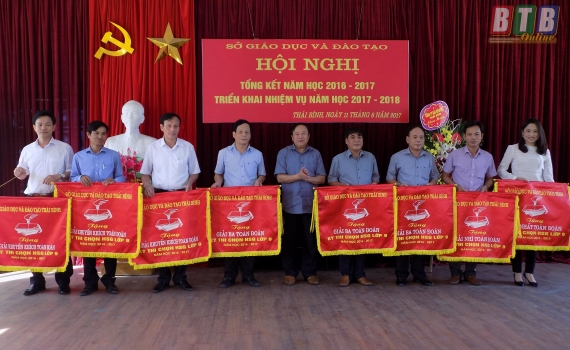
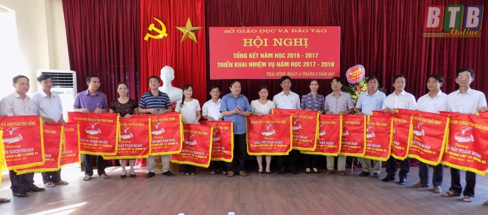

Sở Giáo dục và Đào tạo tổng kết năm học 2016 – 2017

Đồng chí Đặng Phương Bắc, Tỉnh ủy viên, Giám đốc Sở Giáo dục và Đào tạo trao Cờ cho các đơn vị đạt thành tích xuất sắc trong kỳ thi chọn học sinh giỏi cấp tỉnh khối THCS.
Đồng chí Nguyễn Thị Lĩnh, Tỉnh ủy viên, Phó Chủ tịch UBND tỉnh đến dự.
Năm học 2016 - 2017, ngành Giáo dục và Đào tạo tiếp tục được sự quan tâm hỗ trợ, tạo điều kiện thuận lợi cho mọi hoạt động các cấp, các ngành. Đội ngũ nhà giáo và cán bộ quản lý không ngừng nỗ lực, trau dồi kiến thức nhằm nâng cao chất lượng giáo dục. Các hoạt động xã hội hóa giáo dục được đẩy mạnh, công tác tăng cường huy động mọi nguồn lực đầu tư cho sự nghiệp giáo dục có sự chuyển biến.
Về chất lượng giáo dục, năm học vừa qua, toàn tỉnh có 37 học sinh đoạt giải trong kỳ thi chọn học sinh giỏi quốc gia, 392 học sinh lớp một, 334 học sinh lớp 9 và lớp 12 đoạt giải trong kỳ thi chọn học sinh giỏi cấp tỉnh. Các cấp học đã tích cực đổi mới phương pháp dạy học, đặc biệt là cấp tiểu học đã thực hiện nghiêm Thông tư số 22 của Bộ Giáo dục và Đào tạo về đánh giá, nhận xét học sinh tiểu học, nhân rộng dạy học tiếng Việt 1, công nghệ giáo dục, thực hiện mô hình trường học mới… Về cơ sở vật chất, các địa phương đã huy động được 487 tỷ đồng để tu bổ, sửa chữa, xây mới, mua mới cơ sở vật chất, trang thiết bị dạy học. Đến nay, toàn tỉnh có 746 trường học đạt chuẩn quốc gia.

Đồng chí Đặng Phương Bắc, Tỉnh ủy viên, Giám đốc Sở Giáo dục và Đào tạo trao Cờ thi đua cho các đơn vị đạt thành tích xuất sắc trong kỳ thi chọn học sinh giỏi cấp tỉnh khối THPT.
Trong năm học 2017 – 2018, ngành Giáo dục tiếp tục tăng cường kỷ cương, nền nếp dạy và học; tích cực học tập và làm theo tư tưởng, đạo đức, phong cách Hồ Chí Minh nhằm khắc phục những tiêu cực trong giáo dục. Đồng thời đổi mới cách dạy, cách học, cách kiểm tra đánh giá theo hướng phát triển phẩm chất, năng lực người học gắn với định hướng nghề nghiệp và phân luồng giáo dục phổ thông. Tích cực chuẩn bị hệ điều kiện để thực hiện chương trình giáo dục phổ thông tổng thể sau năm 2018.
Phát biểu chỉ đạo tại hội nghị, đồng chí Nguyễn Thị Lĩnh, Tỉnh ủy viên, Phó Chủ tịch UBND tỉnh ghi nhận và biểu dương kết quả ngành Giáo dục đạt được trong năm học vừa qua. Đồng chí Phó Chủ tịch UBND tỉnh đề nghị Sở Giáo dục và Đào tạo tiếp tục rà soát các văn bản chỉ đạo nhằm nâng cao công tác quản lý trong việc chỉ đạo các hoạt động chuyên môn cũng như các lĩnh vực của ngành; tiếp tục tăng cường kỷ cương, nền nếp, tăng cường giáo dục kỹ năng sống; đẩy nhanh hơn nữa tiến trình xây dựng mạng lưới trường lớp. Đồng chí cũng yêu cầu các trường học cần ban hành quy chế chi tiêu nội bộ dựa trên các văn bản hướng dẫn nhằm thực hiện nghiêm, công khai, minh bạch. Về thực hiện mô hình trường học mới, đồng chí đề nghị dừng việc nhân rộng mô hình; với các trường đang thực hiện mô hình này, tạm dừng dạy ở khối lớp 2 và lớp 6, đồng thời căn cứ vào tình hình thực tế của từng địa phương xem xét có nên tiếp tục dạy ở các khối lớp hay không. Đồng chí nhấn mạnh, các trường cần đổi mới hình thức dạy và học, thi cử cũng như kiểm tra đánh giá phù hợp với những đổi mới của Bộ Giáo dục và Đào tạo trong thời gian tới.